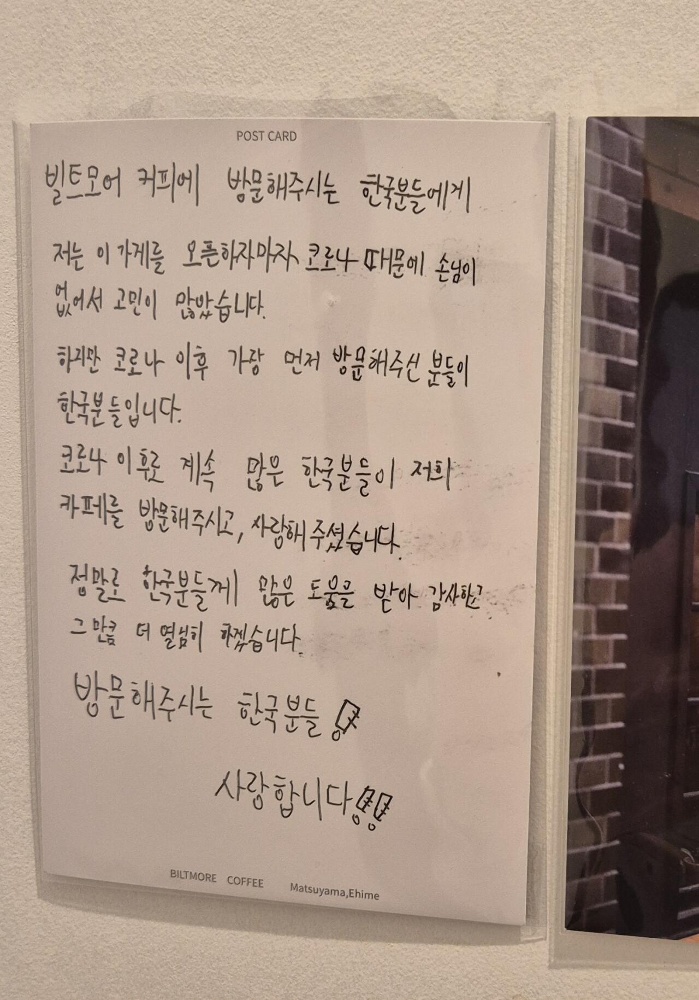

일본 한 소도시 카페 화장실에 붙어있는 글
댓글
중국어 쓰자
"워 쓰 중꿔런" "오레사마와 츄고쿠징다!"
이 두 문장만 반복해!
마츠야마 한국사람들 꽤 가긴하지
올해 갔다왔는데 좋더라.

오이쉬
여기 구글 리뷰 우리나라 사람이 적은 거 되게 많네;;
브런치카페라고 함
소도시 어디인데
에히메현 마츠야마시
한국인들이 존나 많이 가는 소도시이긴 함 ㅋㅋ
중핵시이며 현청소재지
낭만있네~
화장실에 써있는걸 보면 교토식 혼네가 따로 있는건가
시끄러운 한국놈들은 화장실이 어울린디거나
마 니 인터넷 중독이다
에히메에 뭔 혼네여 ㅋㅋㅋㅋ
카페 예쁘네 다음 일본 여행은 저기로 가 봐야겠다
프랜치 토스트하고 너무 맛있어 보임
역시 ㄹ 이거 적는게 힘든가 보네
그래 이렇게 어서옵쇼 아리가또만 하면 얼마나 좋아
뒤에서 음습하게 굴지말고 좀
마쓰야마 좋지
둘러보는데 하루이틀이면 충분하지만 여유있게 쉬기 좋음
온천도 좋았지만
바이신지, 팬케이크집, 야키니쿠집 기억에 남네
의외로 특산물이라는 도미밥은 별로임...
도미밥 맛이 없다 까진 아닌데 3만보 찍고 먹었는데도 그냥 그래서 실망했음.. ㅋㅋㅋ
밥에다 생선회 먹는건데
그돈이면 한국에서 도미+광어에 소주ㅠㅠ
도미밥이 아마 두종류 있을건데 마츠야마식 도미밥은 도미 솥밥같은 거임, 그건 진짜 맛있더라 ㅋㅋㅋㅋ 생선회 올라간 버전은 나도 걍 그랬음
마츠야마 여유 즐기기 좋음
시간남으면 동물원도 좋고 야간개장때가 분위기 좋더라
온천은 도고온천은 그냥 구경 즈음하기 좋고 역사 옆에 신식 온천이 싸고 좋았음
식당은 돈요시 부속고기 맛있고 직원들이랑 대화도 즐거웠으
뭐하는 도시여 신기하네
마쓰야마라고 귤로 유명한 동네인데
시코쿠라서 마이너한 동네이지만
제주항공 뚫려있고
이유는 모르겠는데 한국인 관광객한테 이것저것 바우처 많이 줌
마쓰야마 여행 소소한 팁
1. 무료 셔틀보다는 시내버스
공항에서 빨리 나갈 수 있는 기준으로 현지 체류시간 1~2시간 정도 추가 여유를 얻을 수 있음
회원등급 덕분에 전방좌석+수하물 우선하기 서비스까지 받는 기준이면 공항에서 나오자 마자 버스타면 바로 문닫고 출발하는 경우도 자주 있음
2. 공항 출국 면세점에선 면세점 한정 제품들만구매
면세점 주제에 대부분의 상품이 편의점보다 비쌈
그리고 마쓰야마의 지역색 강한 상품은 전부 시내에서 훨씬 더 저렴하게 구매가능함
로이스 초코렛이나 르타오 같이 마쓰야마랑 관계없는 냉장제품만 면세점에서 구매를 추천함
3. 귤 수도꼭지는 아이가오 관광물산관에서
똑같은 수도꼭지 귤 쥬스인데 180엔 ~ 500엔 까지 장소에 따라서 가격 차이가 매우 심함
호텔에 캐리어 맏기고 마쓰야마성 가는길에 많이들 사먹을건데 비싼데서 먹지말고 기념품 구경하는겸 해서 저기 방문하는거 추천함 마쓰야마 성에서는 로프웨이 내려서 소프트 아이스크림이나 먹자
4. 유니클로 갈 생각이 있었다면 그건 다음기회에
마쓰야마의 유니클로는 시 외곽지역에 있기 때문에 가까운 매장도 버스 환승까지 해가면서 왕복 1시간 이상 거리에 있는데 주변에 추가로 방문할만한 관광지나 쇼핑센터 분위기 좋은 카페 등이 아예 없음
5. 산책패스 당일치기 근교여행은 딱 거기만 가야됨
보통 2회차 방문때부터 근교여행으로 산책패스를 알아볼건데 패스권도 1일권이고 시간상 당일치기 동선이 나오기는 하지만 가장 중요한 부분인 하루에 걷는 거리는 숨겨져있음
해당 코스만 방문하더라도 2.5만보 정도 요구되는 강행군이 필수인데 가끔 욕심내서 우지코 - 오즈 - 시모나다 코스로 돌고 밤에 도고온천 라이트업이랑 도고온천공원 전망대까지 하루에 보러가는 사람들 있는데 무조건 다음날 근육통 터져서 뒤지기 직전일 가능성이 높음
6. 도고온천은 본관에서
무료이용이 가능한 도고온천 신관의 경우 그냥 평범한 작은 동네 목욕탕처럼 생겼기 때문에 기대보다 실망이 클 가능성이 높음 기왕 갈거면 분위기라도 좋은 본관으로 가는게 만족도 높음
도고온천 신관 무료입장은 한여름에 쓰면 좋은데 첫날 오전비행기로 도착하자마자 짐맏기고 마쓰야마 성 다녀오면 땀범벅인데 체크인 시간까지는 아직 멀었기 때문에 찝찝한 상태로 돌아다녀야 될 가능성이 높은데 여기 잠깐 들려서 샤워하고 나오면 좋음
7. 연휴가 길다면 다구간 여행
결국 소도시 이기에 5일이상 장기여행이 되어버리면 할게없어서 호캉스를 하게 되는데
이때는 페리를 타고 다구간 여행을 하면서 벳푸까지 여행 범위에 포함시켜도 나쁘지 않음
꿀팁 왕감사
유썩~
도고온천도 좋지만 역사 옆 키스케노유 여기 온천 싸고 다양한 탕이 있어서 좋음
코신안 가서 무료 티 마시면서 작은 전통집에서 작은 화원 구경도 편안함
일정이 길면 기차타고 다카마쓰 가는 것도 좋았음
키스케노유는 옆에 키스케 박스 빠칭코 하는 좀비들 무료입장 덕분에 안감 마쓰야마 역은 그 근처 숙소잡은거 아니면 그쪽으로 가는 동선도 별로이기도 하고
지금은 모르겠는데 작년 가을에 펌프 고장으로
원천방류를 중지했었음
개인적으로 여기 입욕제는 나쁘지 않은편이라 생각함
다카마쓰는 2번 갔는데 나고야 센다이보다 더 심한 노잼도시였음 그리고 마쓰야마에서 다카마쓰 가는건 세토우치 패스 쓰는거 아니면 버스를 추천함
그리고 세토우치 패스라면 다음 여정을 위해서 오카야마에 거점 잡는거 더 좋기도 함
패스권이 아니면 비용이 좀 더 들어가도 페리타고 히로시마로 가는것도 좋음
다카마쓰로 가나 히로시마로 가나 시간적인 측면에선 동일하거나 히로시마행이 더 빠른데
미야지마랑 이와쿠니, 히로시마 원폭돔 생각하면 여행 밀도가 좀 더 높고 귀국편도 같은 제주항공이라 편도결재가 필수인 다카마쓰보다 항공권이 조금 더렴함 귀국할때
다카마쓰는 귀국할때 다른 터미널을 써야되는것도 단점
빌트모어는 수플레같은 프렌치토스트가 킥임
반드시 프렌치토스트에 한개 더 추가해서 2개를 먹을것


아ㅋㅋ 저기 위스키 독립병 사러 근처 모아이랑 탄고야 리쿼샵 들렸다가 가본적 있었는데ㅋㅋ
저 카페 근처에 유명한 냄비우동집이 있음.
거기가 한국 인스타그램에 바이럴되면서 사람이 많이감.
주변에 가장 가까우면서 인테리어가 이뻐보여서 저 카페도 같이 혜택을 보는듯
내가 커피 마시러가면 혐한되려나